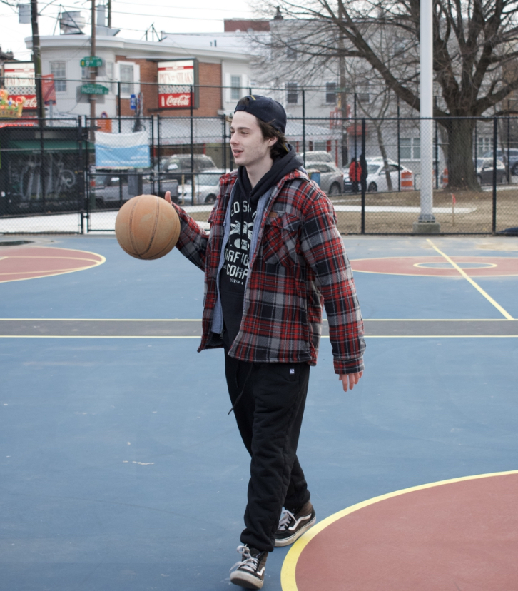

My name is Rocky Arcaro, I am a second year User Experience and Interaction Design Major at Drexel University. I am a part of different proactive student organizations such as The Good Idea Fund and Sigma Phi Epsilon. I primarily do whatever digital art/marketing tasks they need, but also take on different roles such as event planning, and new member coordinator helping them develop introductory skills in leadership and professionalism
I grew up in Plymouth Meeting PA, just outside the city in the suburbs. I have always had a creative mindset and have used that interest to engage in different things such as graphic design, UX, art, and other creative hobbies. I always had an interest in the arts but I specifically got into graphic design in highschool painting and selling video game controllers. From there I started getting into digital art and learning different softwares and programs.
